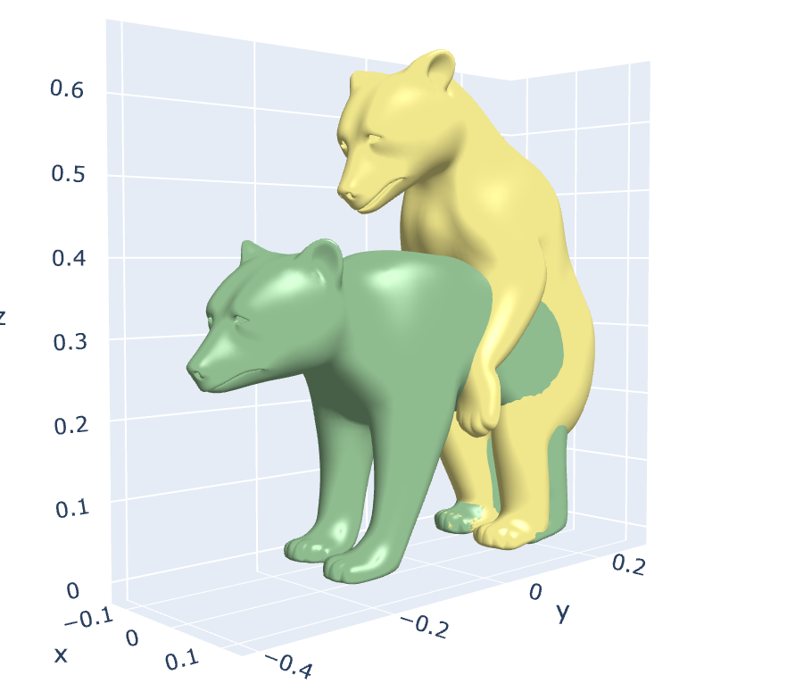
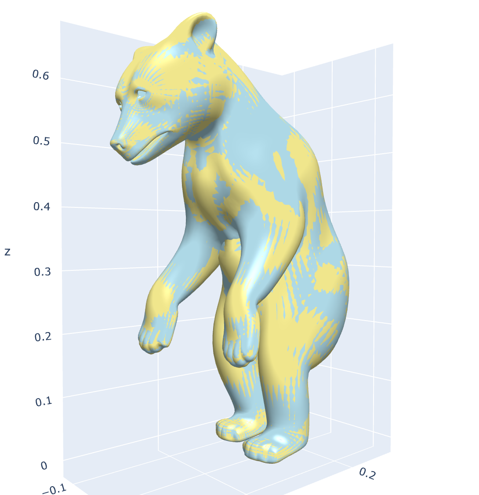
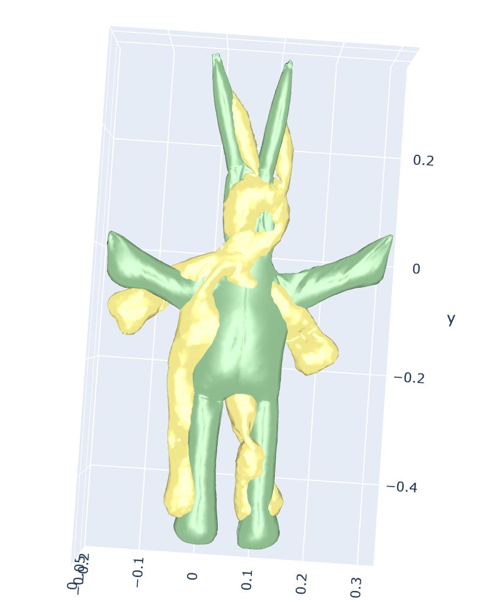
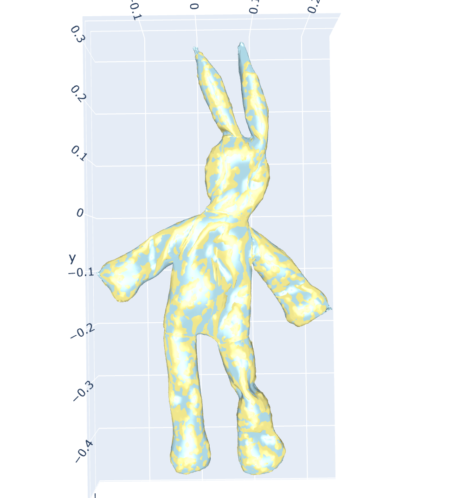

Lightweight
Core source stays under 0.3 MB, ships under MIT, and drops cleanly into research or production trees.
Lite3DRegLib is a lightweight (<0.3 MB) 3D point cloud and mesh registration toolkit with mirrored Python and C++ APIs. Blend research-grade rigid and non-rigid solvers with interactive Gradio tools for robotics, vision, and digital twin workflows.
A compact, robust, and user-friendly lib for modern 3D registration tasks.
Core source stays under 0.3 MB, ships under MIT, and drops cleanly into research or production trees.
Fast-Robust-ICP and SPARE solvers help Lite3DRegLib outperform baseline ICP and CPD in speed and resilience.
The Gradio-powered interface on Hugging Face lets you tweak parameters, inspect residuals, and reset defaults live.
Unified Python and C++ bindings with curated datasets keep Windows and Linux experimentation straightforward.
Launch the Hugging Face Space to adjust registration parameters via dropdowns, explore example datasets, and reset to curated defaults while watching convergence unfold.

Spin, zoom, and compare rigid/non-rigid outputs in the same Gradio canvas.
Powered by Fast-Robust-ICP
for resilient alignment across noisy captures.


SPARE-based deformation
matches expressive meshes and scanned humans with impressive
fidelity.




Dependencies, compilation routes, and the C++/Python interfaces that Lite3DRegLib provide.
pip install numpy gradio plyfile trimesh plotlycd scripts
./compile.sh # builds library + Lightweight3DRegDemo.exeRigidFricpRegistration* rigid;
NonrigidSpareRegistration* spare;
rigid->Reg(target_file, source_file, outpath);
spare->Reg(target_file, source_file, outpath);
rigid->Paras_init(use_init=false, file_init="", max_iter=80, stop=1e-5);
spare->Paras_init(30, 1e-3, 1e-4, false, {}, {});
rigid->Read_data(target_points, source_points, target_normals, source_normals);
spare->Read_data(target_points, source_points, target_normals, source_normals);
rigid->Register();
spare->Register();
rigid->Output_data(outpath, "rigid");
spare->Output_data(outpath, "spare");import pyregister as l3dr
rigid = l3dr.RigidFricpRegistration()
spare = l3dr.NonrigidSpareRegistration()
rigid.Reg("data/target.ply", "data/source.ply", "./out/rigid/")
spare.Reg("data/target.obj", "data/source.obj", "./out/spare/")
rigid.Paras_init(useinit=False, fileinit="", maxiter=80, stop=1e-5)
spare.Paras_init(iters=30, stopcoarse=1e-3, stopfine=1e-4,
uselandmark=False, src=[], tar=[])
rigid.Paras_init(); spare.Paras_init()
rigid.Read_data(target_p, source_p, target_n, source_n)
spare.Read_data(target_p, source_p, target_n, source_n)
rigid.Register(); spare.Register()
rigid.Output_data("./out/rigid/", "rigid")
spare.Output_data("./out/spare/", "spare")Blend rigid and non-rigid pipelines to support robotics, cultural heritage, healthcare, and any workflow that relies on precise 3D alignment.
Autonomous fleets stabilize lidar and depth sweeps in real time, feeding SLAM loops with centimeter-level poses for navigation and mapping.
Digital twin and cultural heritage projects register terrestrial scans, photogrammetry meshes, and drone captures into unified asset vaults.
Medical imaging teams align anatomical scans and deformable surfaces to study motion, build patient-specific models, and track treatment progress.
The repository layout keeps core solvers, bindings, and tooling cleanly separated so you can adopt only the layers you need.
Modern C++ solvers implementing Fast-Robust-ICP and SPARE algorithms with Eigen and templated utilities.
High-level API mirrors the C++ entry points, enabling quick notebooks, scripting, and Hugging Face deployments.
Sample datasets, reference pipelines, and walkthroughs for rigid and non-rigid registration experiments.
Ready-to-run visualization in Gradio with parameter controls, reset actions, and live residual monitoring.